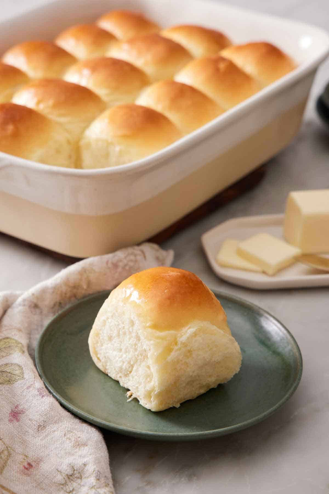

Home
St. George Temple Rolls

Large Batch Ingredients:
- 12 cups all-purpose flour
- 3 1/2 tablespoons active dry yeast
- 1 1/2 tablespoons salt
- 1/2 cup granulated sugar
- 1/2 cup cooking oil
- 4 cups hot potato water
- 2 large eggs
- 1 cup powdered milk
Small Batch Ingredients:
- 5–6 cups all-purpose flour (closer to 6 cups)
- 2 tablespoons active dry yeast (proof first with all the sugar)
- 2 1/2 teaspoons salt
- 1/3 cup granulated sugar
- 1/3 cup cooking oil
- 2 cups potato water
- 1 large egg
- 2/3 cup powdered milk
Potato Water Instructions:
- Boil red potatoes until tender.
- Break them apart slightly to release more starch.
- Strain the liquid through a sieve to collect the potato water.
Instructions:
- Prepare the potato water as described above.
- In a large bowl, combine all ingredients.
- If using the small batch recipe, proof the yeast in the sugar and warm potato water first before adding other ingredients.
- Mix until a smooth dough forms.
- Knead thoroughly, then cover and let rise until doubled in size.
- Punch down and shape into rolls.
- Let the rolls rise a second time until doubled again.
- Bake at 400°F for about 10–15 minutes, or until golden brown.